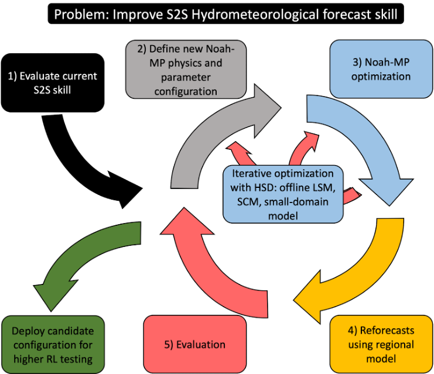
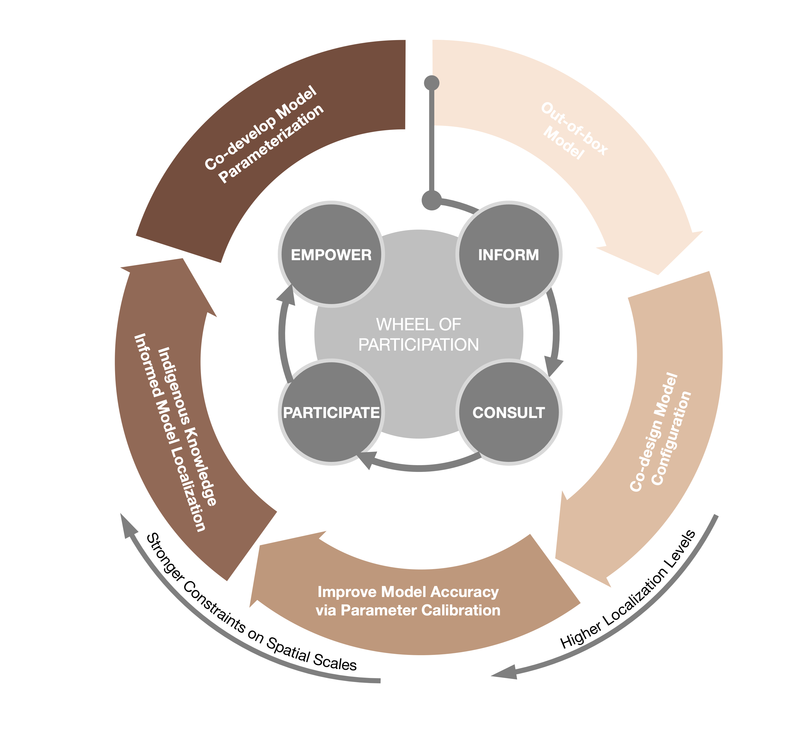
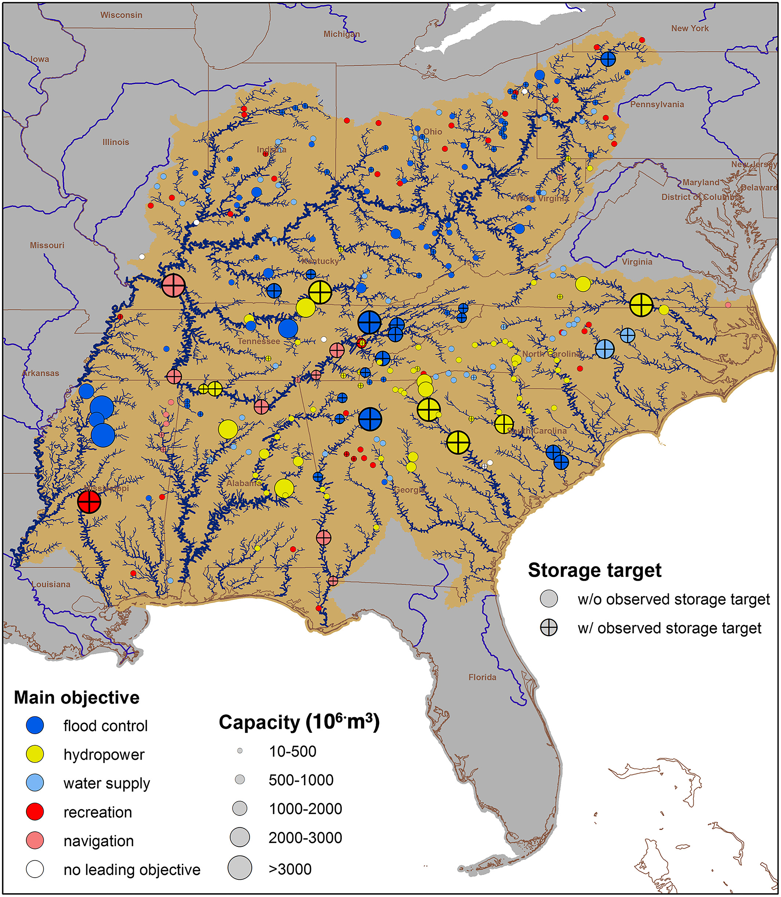
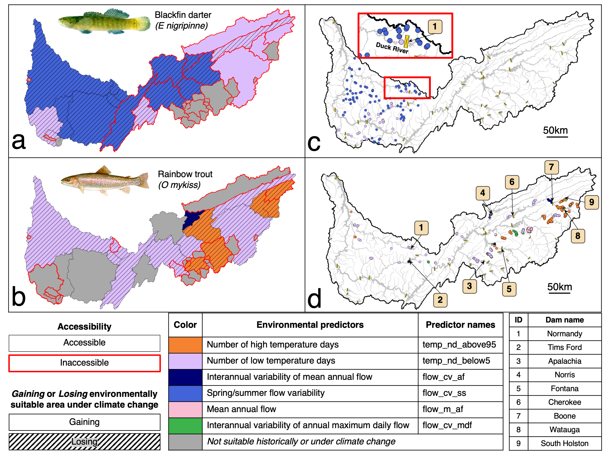

Research Overview

Enhancing process-based land surface models and coupled model systems
Improving coupled model predictions is a challenging and inherently interdisciplinary problem. Often improvements to one component model done in isolation may lead to undesired coupled model performance. Our recent effort to improve coupled model system was funded by NOAA. In this project led by NSF NCAR, we aim to improve the land model hydrology and land-atmosphere feedbacks within the Unified Forecast System (UFS). At UB, we will lead the development of an iterative optimization framework using UFS Hierarchical System Development testing harness. a.c.t. hydro lab
Reflecting the priority of local communities in numerical modeling
Numerical models play a vital role in quantifying climate impacts across the complex, interconnected Earth systems, supporting science-based adaptation and mitigation efforts. However, excluding the voices of end-users, particularly the communities most vulnerable to climate change, deteriorates the usability of numerical model outputs and increases epistemic risks that may lead to the misuse of information in decision-making. We collaborated with social scientists and Indigenous Communities in Alaska and Klamath region to reflect the inputs from community decision-makers into the models, aiming to increase the salience, tangibility, and usability of model products. We seek ways to conduct more in-depth model co-design. a.c.t. hydro lab


Modeling the impacts of human activities on large-scale hydrologic systems
Human activities, especially reservoir operations, greatly alter the hydrology, river environment, and freshwater ecosystems. Especially seasonal thermal stratification in reservoirs has a significant influence on river thermal regimes. As part of our past research endeavors, we developed a computationally frugal reservoir temperature model and formulated a comprehensive model framework to simulate river temperature for heavily regulated river systems. In our recently funded NSF project, we will continue exploring the impacts of reservoir operation and climate change on river thermal regimes in Wyoming and Colorado. a.c.t. hydro lab
Risk assessment for water-related sectors
To better assess the potential climate impacts on water-related sectors, complex hydrologic models are usually integrated with impact models for downstream sectors such as aquatic ecosystems and power sectors. We collaborated with experts in energy and aquatic ecosystems and developed complex model systems to capture the impacts of climate change on corresponding systems. Nonetheless, the extent to which biases in hydrological modeling affect downstream modeling and, subsequently, decision-making remains ambiguous. We will explore this front in our recently funded NSF project together with PIs in NSF NCAR, University of Wyoming, and Auburn University. a.c.t. hydro lab
